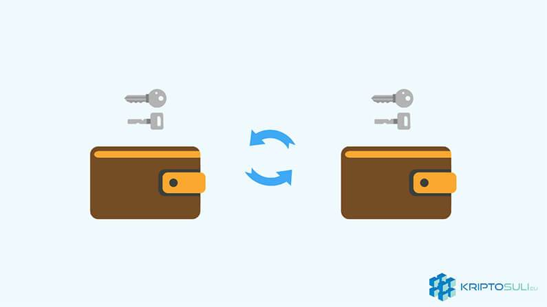
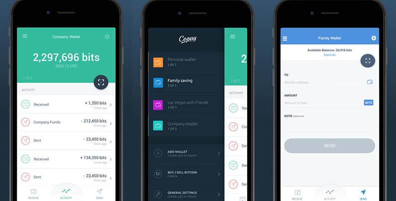
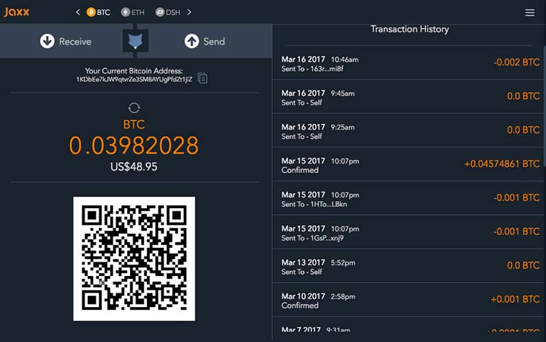
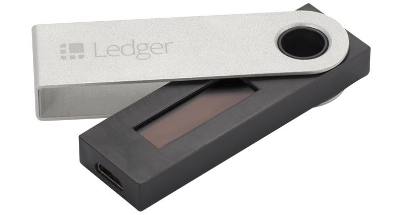

Kriptopénzek tárolása
A hatalmas áringadozások közepette előfordul, hogy egy hacktől hangos a közösség ahol feltörtek egy kriptopénz váltót, és leléptek a felhasználók pénzével. A kriptopénz tulajok legnagyobb rémálma, hogy hacker támadás áldozata lesz.
Ezért SOHA NE tároljuk kriptopénzünket online váltók weboldalain! Bármennyire is kényelmesnek tűnik.
Olyan is előfordul, ahol az emberek elvesztik saját kriptopénzüket. Egy-egy összetört, elveszett merevlemez formájában. Szóval nem csak hackerektől, de sokszor saját magunktól is meg kell védeni kriptopénzünket.
De előbb néhány szó a privát és nyilvános kulcsokról.
Privát és nyilvános kulcsok:
Minden tárcának két kulcsa van. Egy nyilvános és egy privát, és emellett minden tárcának van egy címe is. Ez a cím azonban nem egyenlő a nyilvános kulccsal.
1) A tárca címe szükséges, hogy tranzakciókat fogadj.2) A nyilvános kulcs szükséges, hogy a felek ellenőrizzék a kimenő tranzakciókat.
3) A privát kulcsra (amit SOHA nem szabad kiadnod) pedig szükséged van kimenő tranzakciók indításához.
Ezek a szám- és betűsorozatok matematikailag mind kapcsolatban vannak egymással.
Kripto tárcák:
A kripto tárcák gyakorlatilag egy program ami tárolja a privát és nyilvános kulcsodat, amikkel küldhetsz és fogadhatsz digitális pénzt a blokkláncon keresztül, és persze nyomon követheted az egyenlegedet. Ha szeretnél Bitcoin-t vagy egyéb altcoin-okat használni szükséged lesz egy ilyen tárcára.
Milyen változatok léteznek?
Asztali gép: A tárca, letölthető és telepíthető a számítógépre, vagy laptopra. Ez csak azon az eszközön elérhető amelyre telepítve van. Viszonylag biztonságosnak számítanak, viszont ki van téve a vírus és feltörés veszélyének.
Online: Online tárcák egy „cloud”-on tárolják kriptovalutát. Ezek meglehetősen kényelmesek, mert bárhonnan hozzá lehet jutni a rajta lévő egyenleghez, azonban egy harmadik fél tárolja a privát kulcsot ami így sokkal sebezhetőbb egy hacker támadás ellen.
Mobil: Applikációként kell letölteni őket, mindennapi használatra ezek a legmegfelelőbb tárcák.
Hardver: Hardver tárcák kis USB eszközök. Annak ellenére, hogy a tranzakciókat online intézik, a privát kulcsot offline tárolják tehát ha a számítógépen vannak is rosszindulatú szoftverek, a privát kulcshoz akkor sem férnek hozzá. Ezáltal az egyik legbiztonságosabb tárcának számítanak. Ezek a tárcák általában többféle kriptovalutát is képesek tárolni. Azonban, míg a szoftveres tárcák ingyenesek, ezeknek az árai 60€-120€ között mozog.
Papír: Gyakorlatilag egy kinyomtatott privát kulcs. Legtöbbször ajándékozásra használják. Kellő elővigyázatossággal biztonságos lehet.
Néhány szempont amit vegyél figyelembe a döntés előtt:
Szükséged van-e a tárcára mindennapi használathoz, vagy csak hosszú távú befektetési célra van?Egy vagy több valutát szeretnél használni?
Szükséged van-e hozzáférésre bárhonnan, vagy csak otthonról?
Copay
Bitpay által készített, Copay az egyik legjobb a piacon. Kényelmes és kezdőbarát tárca. Könnyű felhasználó felülete van, asztali gépen, mobilon és online is használható. Nagyon jó biztonsággal rendelkezik. Ingyenesen használható. Bitcoin és Bitcoin Cash tárolására az egyik legalkalmasabb.
Jaxx
Jaxx több kriptovalutát is képes tárolni mint például az Ethereum, Ether Classic, Dash, Litecoin, Zcash, Bitcoin. Rengeteg eszközön elérhető (Windws, linux, Android, IOS). Összességében Jaxx egy kiváló választás azoknak akik egy több kriptovalutát tárolni képes tárcát keresnek. Biztonságos, ingyenes és felhasználó barát.
Trezor
Trezor egy hardver tárca. Nem kaphat vírust, és senki nem férhet hozzá a privát kulcsodhoz, ezért az egyik legjobb biztonsággal rendelkezik. Könnyű használni, Windows, OS X és Linux barát. A Trezor tárcát mindig nálad kell legyen, ha Bitcoin-t szeretnél küldeni, ezért azoknak ajánlott akik nem használják sokat, és inkább befektetési céllal vettek Kriptopénzt. Többek között támogatja Bitcoin, Litecoin, Dash és Zcash-t.
89€ + 17€ posta költség
Ledger Nano S
A Ledger Nano S az egyik legbiztonságosabb és legnépszerűbb hardver tárca a piacon. Jelenleg 23 különböző kriptovalutát képes tárolni. Használatához csak egy Chrome böngészőre van szükséged. Saját PIN kóddal rendelkezik amit te állíthatsz be az első bekapcsoláskor. Részletesebb beszámolót a Ledger Nano S menüpont találsz.
Ára 79.00 € postaköltséggel együtt
Exodus
Az Exodus egy viszonylag új és ismeretlen digitális pénztárca. Jelenleg csak számítógépen elérhető. Nem csak tárolni de kereskedni is lehet ezen a nagyon felhasználóbarát felületen. Kereskedhetünk Bitcoin, Ethereum, Litecoin és Dash-el. A tárca ingyenesen használható.
További biztonsági intézkedések:
Mindig készíts biztonsági mentést a tárcádról. Csak kisebb összegeket tarts online mindennapi használatra. A többit pedig hardver tárcán.
Hosszú és bonyolult jelszavak segítenek, és állítsd be, hogy a kiutalás csak jelszóval legyen lehetséges.
Telepítsd a legfrissebb szoftver frissítéseket, hogy elérhetőek legyenek a legutóbbi biztonsági fejlesztések.
Záró gondolatok
Semmi sem 100%-ig biztonságos. Vannak bizonyos tárcák amik nagyon közel vannak, de egyik sem tökéletes. A tárca választást nem szabad elkapkodni. Válassz olyat, amellyel nyugodtan fogsz tudni aludni éjszaka.


2018. Január 05.